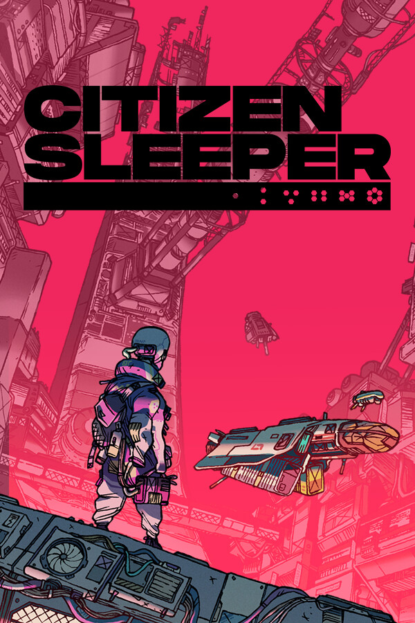

Citizen Sleeper
Citizen Sleeper
Details
 |
|
| Playtime | Not Played |
| Last Activity | Never |
| Added | 6/20/2026 8:01:46 |
| Modified | 6/20/2026 8:02:14 |
| Completion Status | $Check Out |
| Library | Epic |
| Source | Epic |
| Platform | PC (Windows) |
| Release Date | 5/5/2022 |
| Community Score | 90 |
| Critic Score | 82 |
| User Score | |
| Genre | Adventure Indie RPG |
| Developer | Jump Over The Age |
| Publisher | Fellow Traveller |
| Feature | Achievements Camera Comfort Cloud Saves Color Alternatives Custom Volume Controls Family Sharing Full Controller Support Mouse Only Option Playable Without Timed Input Single-Player Trading Cards |
| Links | Steam Official Website YouTube GOG Epic Discord Wikipedia Subreddit Community Wiki Twitch Bluesky Nintendo Xbox Playstation |
| Tag | |
Description

One of 2022’s most acclaimed indies, the Game Awards-nominated Citizen Sleeper is a Tabletop-inspired narrative RPG set on Erlin’s Eye, a ruined space station that is home to thousands of people trying to survive on the edges of an interstellar capitalist society.
You are a sleeper, a digitised human consciousness in an artificial body, owned by a corporation that wants you back. Thrust amongst the unfamiliar and colourful inhabitants of the Eye, you need to build friendships, earn your keep, and navigate the factions of this strange metropolis, if you hope to survive to see the next cycle.


Inspired by Tabletop Roleplaying games, Citizen Sleeper uses Dice, Clocks and Drives to create a player-led experience, where you choose your path in a rich and responsive world. Each cycle you use the dice you are dealt to choose what to do with your time. Make or break alliances, uncover truths and escape your hunters. Survive and ultimately thrive, one cycle at a time, and sometimes against the clock!


The station plays host to characters from all walks of life, trying to eke out an existence among the stars. Salvagers, engineers, hackers, bartenders, street-food vendors, each has a history which brought them here. You choose which of them you wish to help, and together you will shape your future.


Eventually, you will learn to use your dice to hack into the station’s cloud to access decades of digital data, uncover new areas and unlock secrets. This is your unique power, and with it you can change your future. Corporate secrets, rogue AIs and troves of lost data await those willing to dive into the depths of the station’s networks.


Essen-Arp: to them you are just property, one more asset in a portfolio that stretches across the stars. You are the product of an abusive system, in a universe where humanity’s expansion is marked by exploitation and extraction. Escape the makers of your decaying body, and chart your own path in a richly imagined, deeply relevant sci-fi world which explores ideas of precarity, personhood and freedom.

Citizen Sleeper uses Dice, Clocks and Drives to create a player-led experience, where you choose your path in a rich and responsive world.

Each cycle you roll your dice. Assign them to vast range of actions available on the station. With every action, choose what, and who, matters to you, shaping the lives of those around you, and ultimately the future of the station.

Clocks track both your actions and the actions of others across the station. From becoming a local at the Overlook Bar to protecting a friend from Yatagan enforcers, clocks allow you to track your own progress and the influence you have on the world around you.

Follow drives not quests, allowing you to pick and choose the stories and activities that matter to you. As you do, you will shape your character's five skills (Engineer, Interface, Endure, Intuit and Engage), unlocking perks and bonuses that reflect and change how you choose to live in this world.

Citizen Sleeper now includes all three post-launch DLC episodes FLUX, REFUGE and PURGE, which expand the game and introduce additional characters and locations to Erlin’s Eye in an exciting new late game storyline.

ABOUT THE DEVELOPER

Jump Over the Age is a one-person game development studio founded by Gareth Damian Martin (they/them). Gareth is the winner of GDCA and Indiecade awards, and has been nominated for a Games Award, multiple IGF Awards, a GDC Award, and four BAFTAs. They have been named both “An accomplished world-builder” (Edge Magazine) and “one of the most exciting indie talents around” (Eurogamer).